Tratamientos
Plasma Rico en Plaquetas
¿Qué es el HAIR MEDICINE PLASMA?
Es un tratamiento que consiste en el aprovechamiento de los factores de crecimiento obtenidos a partir de las plaquetas que son elementos constituyentes de la sangre. Este tratamiento consigue realizar una función de regeneración de los tejidos, al provenir de nuestra propia sangre, lo que hace es retrasar el deterioro de la célula de la unidad folicular. Evitando así, el envejecimiento capilar y que el pelo se vaya haciendo más fino y pierda brillo. Como resultado obtendremos un cabello mucho más joven.
El tratamiento Hair Medicine Plasma se lleva utilizando desde hace muchos años en otros ámbitos diferentes al capilar: traumatología, implantes dentales, rejuvenecimiento facial, curación de úlceras, etc… Estudios científicos recientes comprueban el efecto positivo del PRP en el tratamiento de la alopecia.
¿Cómo funciona el HAIR MEDICINE PLASMA?
En este tratamiento se toma una muestra de sangre autóloga (del propio paciente). El producto de esta muestra de sangre recibe tratamiento en un dispositivo de tecnología avanzada, de forma que provoque la disrupción plaquetaria y la liberación de los factores de crecimiento derivados de las plaquetas. El plasma se va a reinyectar después al nivel de la dermis, y tiene su efecto estimulante de la unidad folicular con el potencial extraordinario de rehabilitar folículos que estén en fase de envejecimiento y permitir que vuelvan a producir pelo con calidad y resistencia. Todo ello se consigue a través del aumento de la vascularización de la zona tratada, de favorecer la producción de colágeno y de contrarrestar el efecto negativo de los radicales libres, evitando así el envejecimiento celular. Simultáneamente, el HAIR MEDICINE PLASMA estimula todas las otras unidades foliculares para que también produzcan pelo más fuerte y resistente. Con todo ello, conseguimos que este tratamiento sea uno de los que mayor volumen proporcionan a nuestro cabello del cuero cabelludo.
El efecto del plasma se basa principalmente en que las plaquetas contienen abundantes factores de crecimiento, sustancias que ayudan a que se regeneren nuevos vasos sanguíneos en la zona que infiltramos llegando más nutrientes a la misma y que nos ayudan a aumentar la proliferación celular y de fibras. En el caso concreto de la infiltración de HAIR MEDICINE PLASMA en el cuero cabelludo para el tratamiento de la alopecia se consigue la mejoría de la calidad del pelo y aumento de grosor del ya existente. Todo esto es percibido como un aumento en la densidad capilar.
¿Cuántas sesiones de HAIR MEDICINE PLASMA necesito?
Esto siempre dependerá del estado del paciente. Tenemos que ser conscientes de dónde partimos para saber qué resultados podemos obtener y cuántas sesiones necesitaremos. El grado de alopecia y la caída de su cabello es muy importante para definir el tratamiento. Por norma general se suele dar una sesión cada 2/3 meses. Sobre todo durante el primer año o tras el trasplante capilar. Después de esto se recomienda hacer una o dos sesiones de mantenimiento al año. Dado que los resultados suelen durar 6 a 12 meses. Al mes de tratamiento ya empezarás a ver como tu cabello se va engrosando y densificando. Pero es sobre todo a partir de la segunda sesión cuando los efectos son mucho más visibles.
Mesoterapia Capilar
La mesoterapia capilar es un método de tratamiento que se aplica inyectando en el cuero cabelludo las vitaminas, los minerales y las mezclas de aminoácidos necesarios para el fortalecimiento del cabello. Este método permite que los componentes que nutren los folículos pilosos se asienten fácilmente en el pelo. Con la mesoterapia se puede tratar la caída del cabello, ya que permite el engrosamiento del cabello debilitado, detiene la caída y hace que el pelo sea más fuerte y brillante.
¿Qué se inyecta en mesoterapia capilar?
En Hair Medine Tandil, disponemos de una fórmula exclusiva, una combinación pensada específicamente para nuestros pacientes. Actúa de manera subcutánea activando biológicamente las células de unidades foliculares y regenerando la epidermis, factores que contribuyen a favorecer la aparición del pelo. Como resultado se reduce la pérdida de cabello y se potencia su crecimiento con mayor calidad y resistencia.
En nuestro preparado se incluye:
- Ácido hialurónico, que va a integrar la fibra de pelo producida, logrando que esta se mantenga más hidratada y sea más resistente a la rotura y a la caída.
- Inhibidores de la 5-alfa-reductasa (factores antiandrogénicos) que bloquean localmente la acción perjudicial de la testosterona en la producción capilar, evitando su transformación en Dihidrotestosterna (DHT). Esto contribuye a frenar la alopecia androgénica, la más frecuente tanto en hombres como en mujeres.
- Vitaminas, proteínas y sales minerales que se utilizan para la producción de pelo desde el primer momento.
- Factores de crecimiento que van a estimular las unidades foliculares para producir pelo más fuerte y resistente.
- Factores antioxidantes que reducen el estrés oxidativo y así desaceleran el envejecimiento folicular.
Tratamiento MESO HAIR MEDICINE+
Las ventajas de la mesoterapia capilar
Con la combinación de todos estos elementos se logra un cabello más resistente y de más calidad. Este
tratamiento puede ir acompañado de un kit de productos para reforzar este tratamiento desde la comodidad del
hogar del paciente. Es recomendable tanto para hombres como para mujeres que quieran prevenir la caída del
cabello, estimular el crecimiento y la regeneración capilar y nutrir el cuero cabelludo. Se puede aplicar sola
o combinada con otros tratamientos como el plasma rico en plaquetas (PRP), HAIR MEDICINE PRP también es una
excelente forma de potenciar los resultados del trasplante capilar FUE HAIR MEDICINE.
Alta Frecuencia Capilar
Es una corriente eléctrica que trabaja a muy baja potencia en los primeros tejidos de la piel. Los beneficios son muchos: aporta ozono mejorando la oxigenación de los tejidos, es bactericida, controla la oleosidad del cuero cabelludo, además es un excelente recurso para preparar el cuero cabelludo para aplicar productos y tener más permeabilidad.
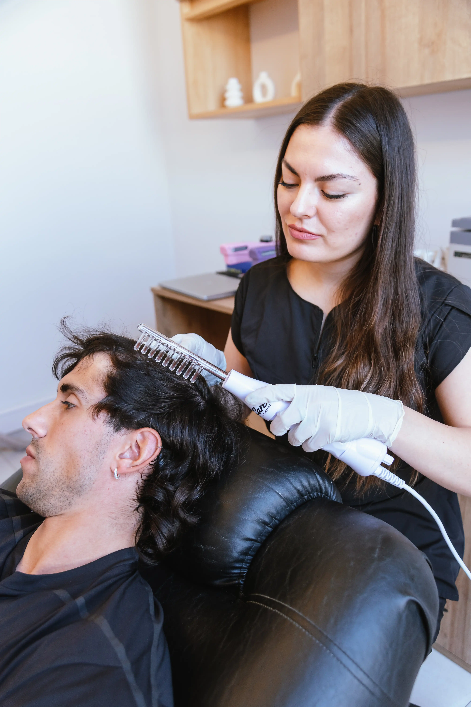Sueroterapia
Sueroterapia es un tratamiento médico avanzado diseñado para nutrir y revitalizar el cuerpo desde el interior. Consiste en la infusión intravenosa de vitaminas, minerales, oligoelementos y aminoácidos esenciales directamente en el torrente sanguíneo, garantizando una absorción rápida y eficaz. Este método asegura que los nutrientes lleguen a las células sin pasar por el sistema digestivo, optimizando la biodisponibilidad y potenciando sus beneficios.
Es especialmente útil para tratar la caída del cabello causada por deficiencias nutricionales. La terapia intravenosa permite una mejor absorción y efectividad de las vitaminas. Los efectos terapéuticos son más rápidos, mejorando las funciones metabólicas y acelerando la recuperación. Recomendado para quienes buscan una recuperación rápida y revitalización del cuerpo.
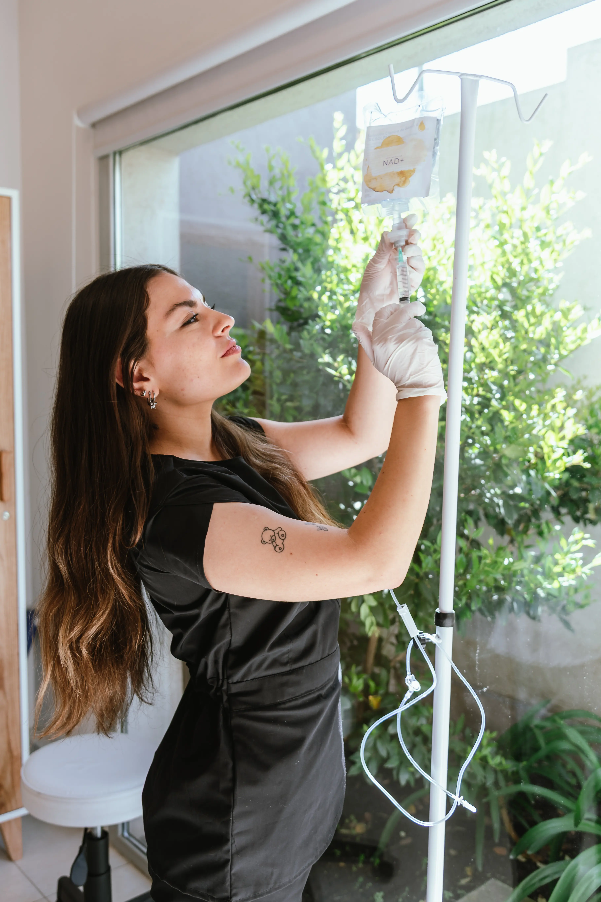Implante Capilar FUE ZAFIRO
¿En qué consiste?
El implante capilar FUE ZAFIRO implica la extracción y colocación individual de folículos pilosos de la zona donante a la receptora. Es un procedimiento mínimamente invasivo y sin dolor. Una vez implantado, el cabello no vuelve a caer, ofreciendo una solución definitiva para la alopecia avanzada.
¿Por qué elegir FUE ZAFIRO?
- Máxima precisión: La técnica Zafiro utiliza microbisturíes de zafiro, permitiendo incisiones más pequeñas y precisas, lo que reduce el daño tisular y acelera la recuperación.
- Resultados naturales: El diseño de la línea capilar y la distribución de los folículos se realiza de forma personalizada, logrando un aspecto natural y armónico.
- Recuperación rápida: Al ser mínimamente invasivo, el paciente puede retomar sus actividades habituales en pocos días.
- Sin cicatrices visibles: No deja marcas lineales, solo microperforaciones que cicatrizan rápidamente.
- Solución definitiva: El cabello trasplantado es resistente a la caída y mantiene sus características a lo largo del tiempo.
¿Cómo es el procedimiento?
- Evaluación personalizada: Se realiza un diagnóstico capilar para determinar la viabilidad y el diseño del trasplante.
- Extracción FUE: Se extraen folículos uno a uno de la zona donante (generalmente la nuca) con instrumental de alta precisión.
- Preparación de la zona receptora: Con microbisturíes de zafiro se realizan incisiones mínimas para implantar los folículos.
- Implantación: Los folículos se colocan cuidadosamente siguiendo la dirección y densidad natural del cabello.
- Postoperatorio: El paciente recibe indicaciones para el cuidado y seguimiento, asegurando una recuperación óptima y resultados duraderos.
¿Quiénes pueden realizarse este tratamiento?
El implante capilar FUE ZAFIRO está indicado para hombres y mujeres con alopecia avanzada, cicatrices o pérdida de densidad capilar. Es la opción ideal para quienes buscan una solución definitiva, natural y segura.
En Hair Medicine Tandil, el implante capilar FUE ZAFIRO es nuestro procedimiento estrella, realizado por un equipo médico altamente capacitado y con tecnología de última generación. Recuperá tu imagen y confianza con resultados visibles y permanentes.

Línea de productos capilares Hair Medicine
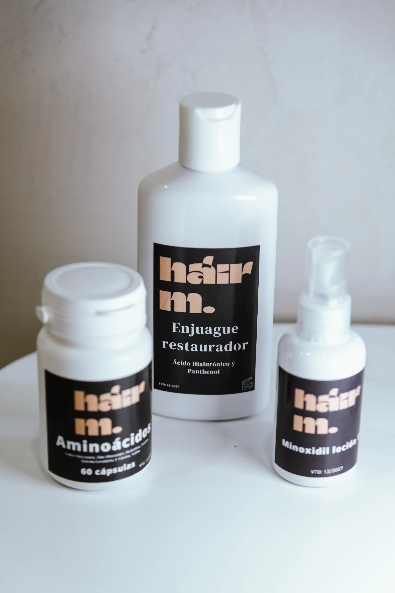Nuestra línea de productos Hair Medicine está especialmente formulada para el cuidado integral del cabello y el cuero cabelludo. Contamos con un enjuague restaurador con ácido hialurónico y pantenol, ideal para hidratar y fortalecer la fibra capilar, aportando suavidad y brillo desde la raíz. Complementamos el tratamiento con cápsulas de aminoácidos, que nutren el cabello desde el interior y favorecen su crecimiento saludable. Además, ofrecemos una loción de minoxidil, reconocida por su eficacia para estimular el crecimiento capilar y frenar la caída. Todos nuestros productos están desarrollados con ingredientes de alta calidad y pensados para potenciar los resultados de nuestros tratamientos médicos y estéticos.
SAW PALMETTO
- Extracto seco de Sabal Serrulata -
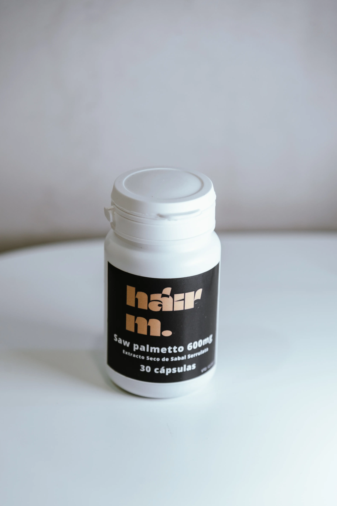BIOFORCE
- Vitaminas B6, Biotina, Zinc, Cobre, Colágeno, L-cisteína -
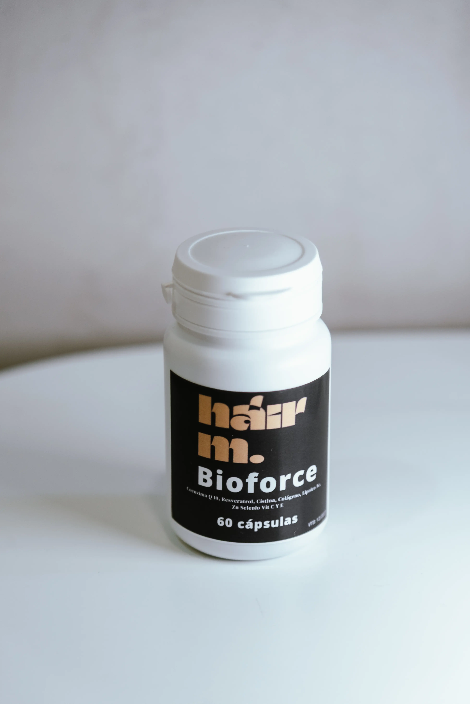AMINOÁCIDOS
- Suplemento capilar con 60 cápsulas -
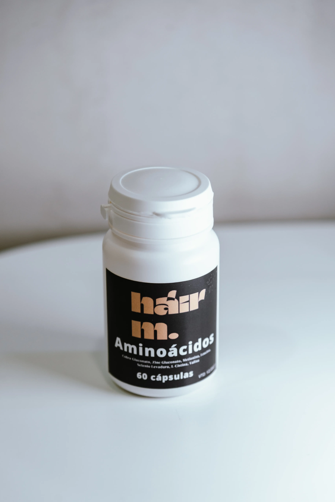MINOXIDIL + DUTASTERIDE
- Comprimidos para tratamiento capilar -
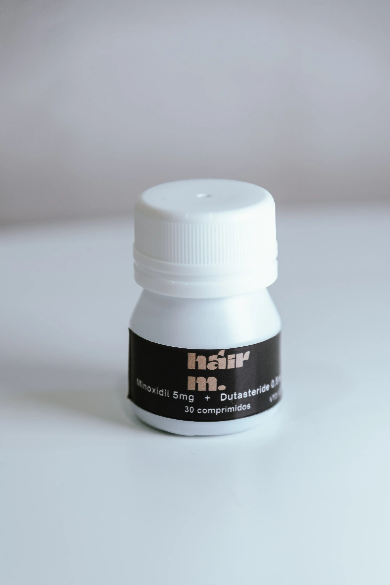LOCIÓN MINOXIDIL 5%
- Tratamiento tópico para caída del cabello -
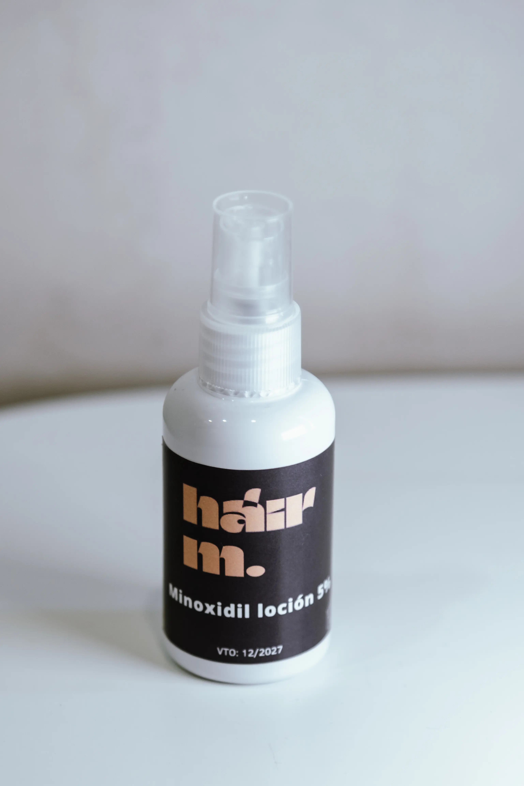ENJUAGUE RESTAURADOR
- Ácido Hialurónico y Panthenol -
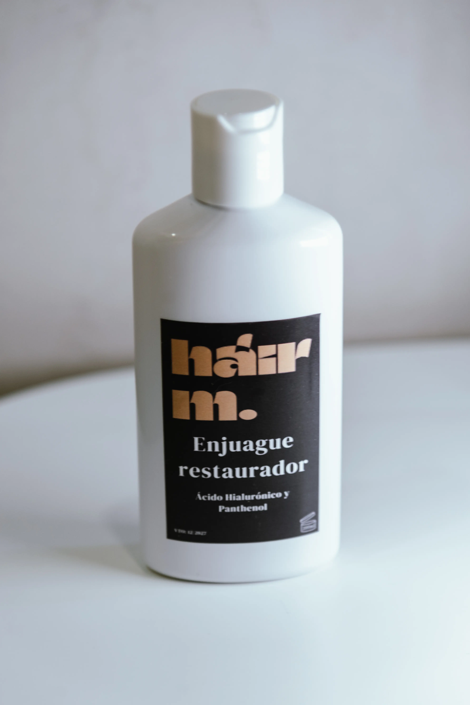MÁSCARA HIDRATANTE
- Hidratación profunda y protección capilar -
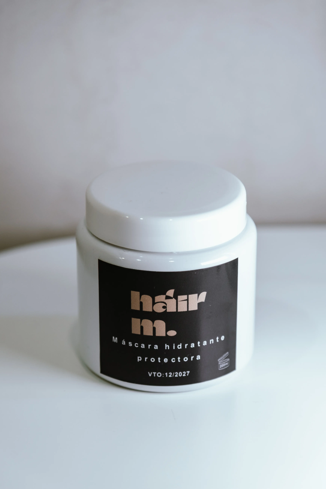SHAMPOO ANTICAÍDA
- Bioestimulante con Saw Palmetto, Té Verde y Colágeno -
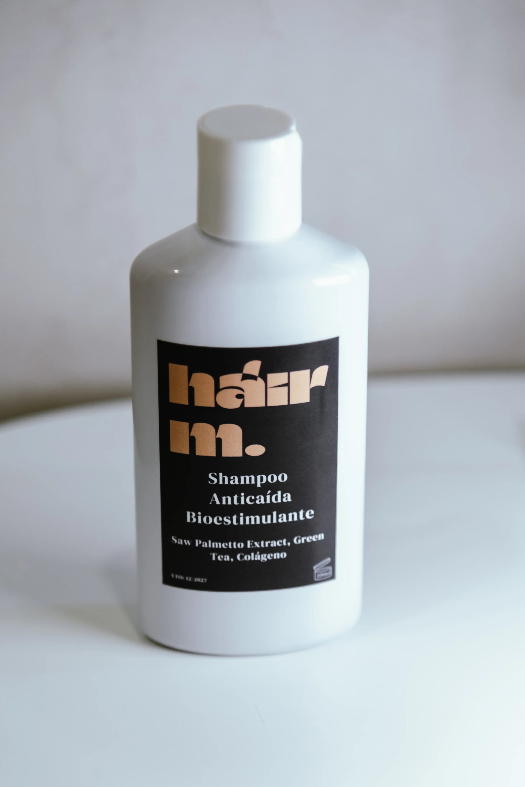SHAMPOO ANTICASPA
- Ketoconazol 2% y Sodio Sulfato -
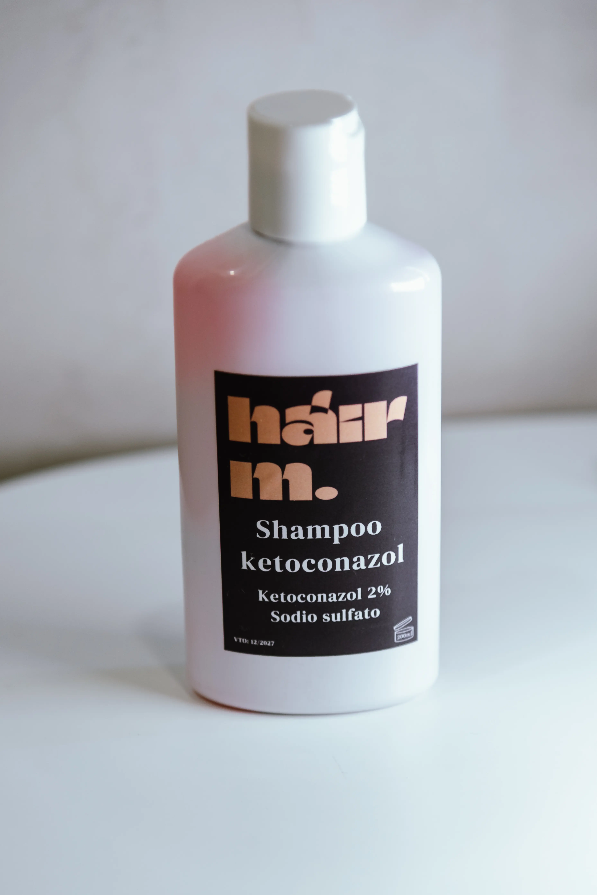SHAMPOO ANTISEBORREICO
- Tratamiento para exceso de oleosidad -
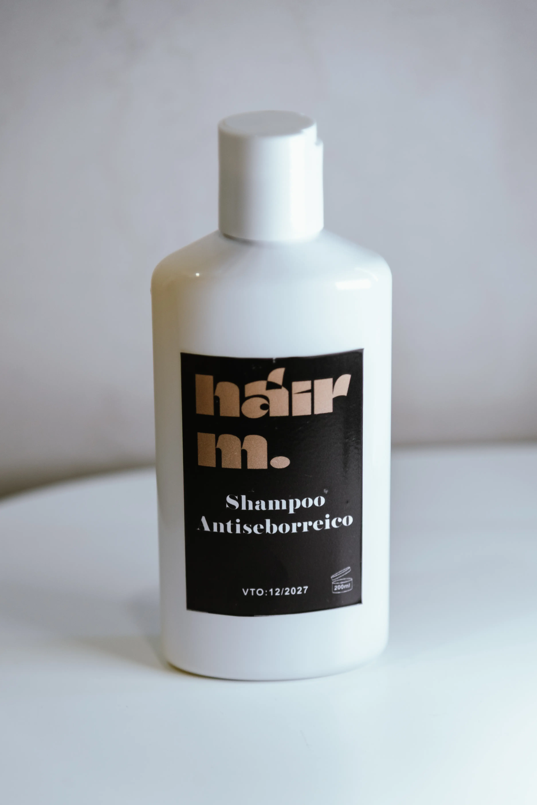SHAMPOO NEUTRO ESTIMULANTE
- Limpieza profunda con mentol -
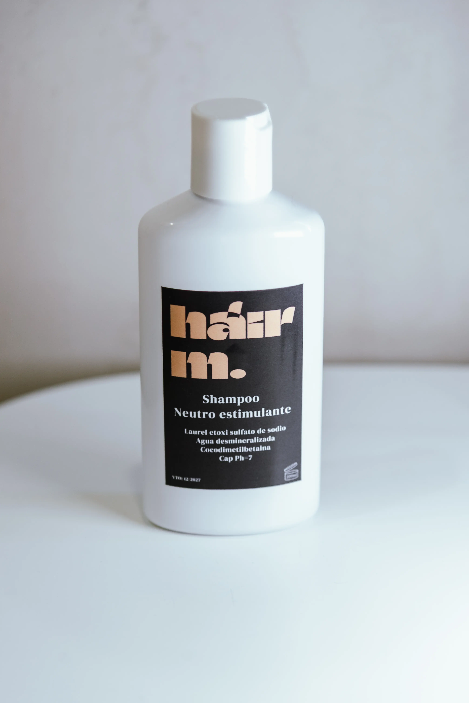SHAMPOO ENGROSADOR
- Con ácido hialurónico y beta-glucano -
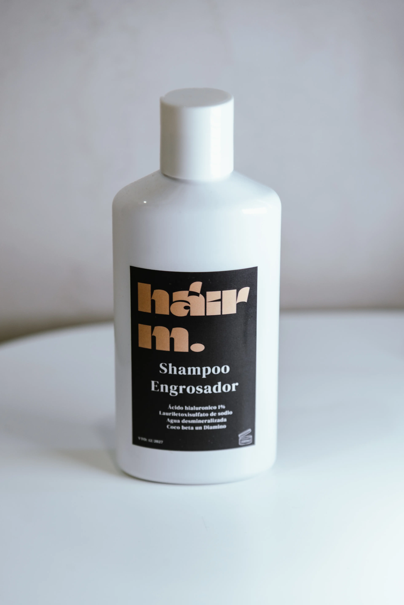SHAMPOO HIDRATANTE
- Para cabellos secos con argán y jojoba -

SHAMPOO NORMALIZADOR
- Para cabellos grasos con mentol y pantenol -
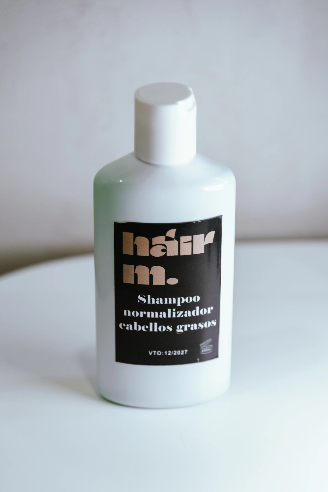